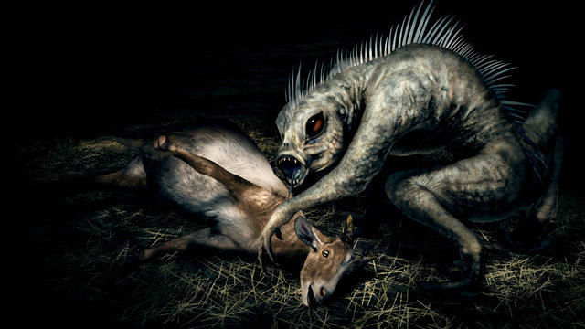

The Chupacabra
The Chupacabra is creature from legend and folklore, the first reported sightings of which were in Puerto Rico in March of 1995 from which many sightings have been reported all across the North and South America. The creature is purported to attack livestock and drain them of their blood, especially Goats, lending to it's name meaning "goat-sucker" in Spanish. Between the many varying reports the creature is described as being from the size of an adult dog to the size of a small bear, with rows of spines dotting it's back and leathery skin.
